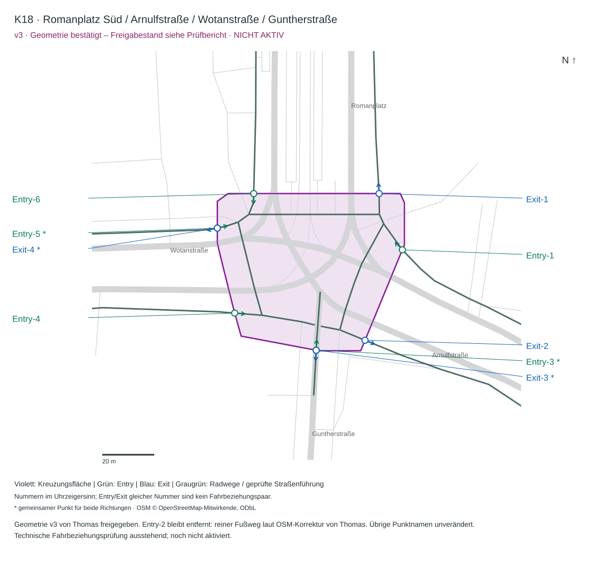

K18 v3 · Romanplatz Süd / Arnulfstraße / Wotanstraße / Guntherstraße
Geometrie v3 von Thomas freigegeben. Entry-2 bleibt entfernt: reiner Fußweg laut OSM-Korrektur von Thomas. Übrige Punktnamen unverändert. Technische Fahrbeziehungsprüfung ausstehend; noch nicht aktiviert.
